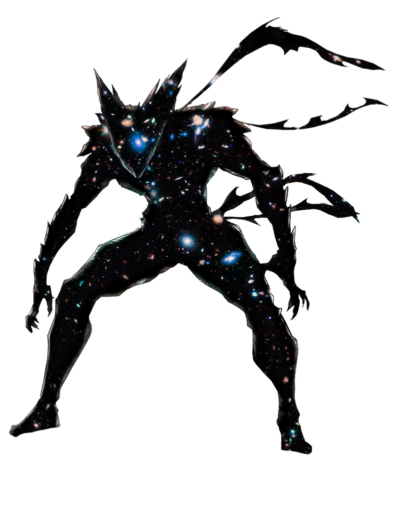

Hobby Page
Hobby's que eu tenho:
1.Jogar Basquete

Eu gosto de jogar Basquete na quadra comunitária do centro
2.Jogar Vídeo-Games

Eu curto jogar, às vezes essas mídias me propocionam ótimas experiências!
3.Citar Datas
Eu estou especulando datas aleátoriamente sem um motivo especifíco, apenas acho legal
4.Cultura Geek
Gosto demais de consumir a cultura geek, é um ótimo entretenimento de fácil acesso!
Aqui estão alguns link's relacionados:
1-Basquete 2-Video-Games 3-Calendárialismo 4-Cultura GeekVrs-Z
Wikipédia,Youtube,Mangalivre e PeritoAnimal